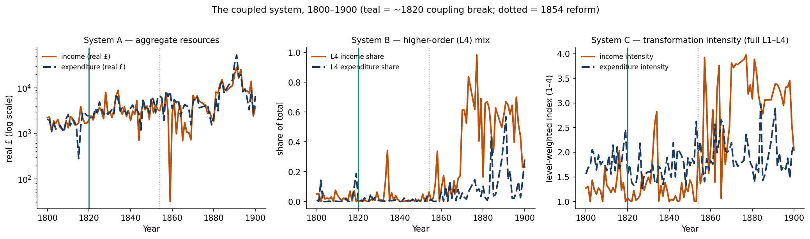
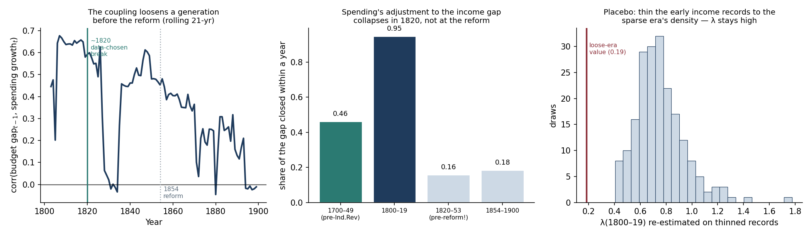
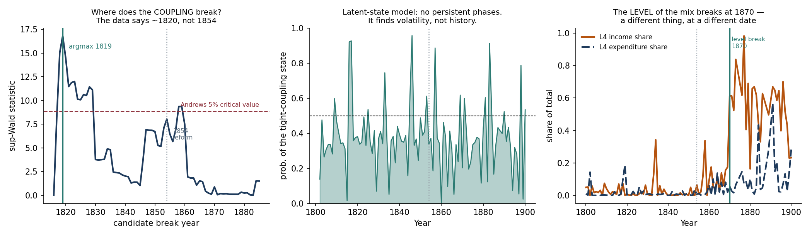
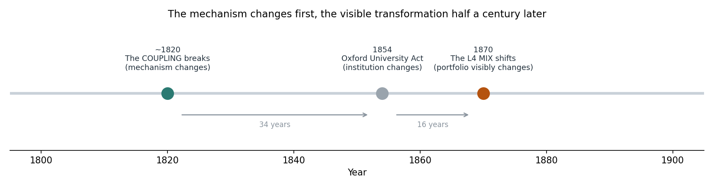

The question for this week: how did the relationship between resource generation (income) and resource deployment (expenditure) evolve through the Industrial Revolution? Rather than studying the two sides separately, we treat them as one system in which each side responds to the other, and estimate the three models set out in the feedback.
The two sides are linked, and the link changes fundamentally across historical periods. Before 1820, spending closed 95% of any gap between income and expenditure within a single year. Oxford spent what the estate yielded. From 1820 that falls to 16%, and is no longer statistically distinguishable from zero. The change happens 34 years before the 1854 Reform Act. When we hide all historical dates and let the data search for its own turning point, it selects 1819–1822. Separately, the composition of spending, which is what v15 measured, does not move until 1870. So the mechanism changed roughly fifty years before the portfolio did.
v15 measured composition: what share of income came from land versus fees, what share of spending went to upkeep versus new activity. It found that the composition pivots in the 1860s–70s: traditional land income falls from 66% to 18%, while new fee and investment income, stuck at 3–7% for a century and a half, jumps to 43%.
This week measures something different: the relationship between the two series over time. Concretely, one question:
If income fell last year, did spending fall this year? And how much of the shortfall did spending absorb: all of it, or none of it?
This cannot be answered by looking at portfolio shares. Two organisations can have identical spending portfolios while one rigidly matches its spending to last year's earnings and the other ignores them entirely. That difference does not appear in the levels at all; it appears only in the relationship between the two series, which is what a coupled dynamic model is built to measure.
Annual series built from the ledgers over 1800–1900 (95 of the 101 years have records; 6 interior gaps filled by linear interpolation), plus 1700–1749 (48 of 50 years) as a pre-Industrial-Revolution baseline. All money is inflation-adjusted using the Phelps Brown–Hopkins price index. Entries are classified into L1–L4 exactly as in v15. (1750–99 has only 16 of 50 years and remains unusable.)
Because "resources" can mean three things, we model three pairs of series rather than arguing about which is correct:
| System | The two series | The question it answers |
|---|---|---|
| A | total real income vs total real expenditure | Does resource acquisition drive resource deployment? |
| B | L4 share of income vs L4 share of spending | Does the transformation spread from one portfolio to the other? |
| C | transformation-intensity index, each side | The same, using the full L1–L4 scale rather than only the top level |
System C weights every entry by its level (L1 = 1, L2 = 2, L3 = 3, L4 = 4) and takes a money-weighted average, giving one number between 1 and 4 per year per side. A rising index means money is moving up the transformation ladder. Unclassified entries are excluded rather than assigned a weight, so the index cannot be dragged by the residual bucket.
Every method used is standard. We name each one and say plainly what it does.
| Method | What it actually does | Where we use it |
|---|---|---|
| Vector autoregression (VAR) | Fits two equations at once, letting this year's income depend on past income and past spending, and vice versa. | Model 1 (the baseline system) |
| Granger causality test | Asks whether the past of one series improves the forecast of the other. This is prediction, not proof of cause, and we report it that way throughout. | Models 1 and 2 |
| Impulse-response functions | Traces how a one-off shock to one side feeds into the other over the following decade. | Model 1 |
| Error-correction model | Measures how fast spending closes the gap when income and spending drift apart. Produces the adjustment speed, the central number in this report. | Model 2 (the core) |
| Chow test | Tests whether a relationship is different before and after a given date. We interact every term with the period, not just the one we care about. This is the stricter version. | Model 2 (break tests) |
| Bai–Perron structural break | Finds the year at which a relationship's coefficients change, with no date supplied. | Model 3 |
| Quandt–Andrews (sup-Wald) search | Tries every year as a candidate break, then compares the best one against a threshold that already accounts for having searched many years. | Model 3 |
| Markov-switching model | Assumes two hidden "states of the world" with different coupling strengths, and infers which years belong to which. | Model 3 (reported as a negative result) |
| PELT change-point detection | Finds shifts in the level of a series (a different and easier question than a shift in a relationship). | Model 3 (the 1870 portfolio break) |
On stationarity: both series in each system need one difference before they are stable enough to model (confirmed by ADF tests), so the VARs are estimated on growth rates (System A) and year-on-year changes (B and C). Standard errors are HAC (Newey–West) throughout, which corrects for the autocorrelation you always get in annual accounting data.

Fitted a bivariate VAR on each of the three systems. The number of past years to include is chosen by the BIC criterion (2 years for System A, 1 for B and C). We then ran Granger causality tests in both directions, and computed impulse-response functions over a 10-year horizon.
| System | Direction tested | F | p | Helps predict? |
|---|---|---|---|---|
| A (money) | income → expenditure | 1.51 | 0.224 | no |
| A (money) | expenditure → income | 0.64 | 0.530 | no |
| B (L4 share) | new revenue → higher-order spending | 0.18 | 0.669 | no |
| B (L4 share) | higher-order spending → new revenue | 0.44 | 0.510 | no |
| C (full L1–L4) | income intensity → spending intensity | 0.08 | 0.784 | no |
| C (full L1–L4) | spending intensity → income intensity | 0.11 | 0.735 | no |
Over the full century, neither side predicts the other, in any of the three systems. The impulse responses agree: a shock to income produces a cumulative response in expenditure of 0.069 after five years, with a standard error of 0.043, which is indistinguishable from zero. The reverse direction is likewise indistinguishable from zero (−0.111, s.e. 0.096).
Read alone, this says there is no dynamic interaction. But a century-long average of zero is also what you get when the relationship is strong in some periods, absent in others, and the two cancel out. The flat result is therefore not a dead end. It is the first piece of evidence that the relationship is not constant over time, which is precisely what Model 2 tests.
A college cannot outspend its income indefinitely, nor hoard a growing surplus forever. So we fit an error-correction model, which measures the quantity that actually matters:
When income and spending drift apart, what share of that gap does spending close within a year? We call this the adjustment speed.
We estimate this speed separately for each period, then run Chow tests at each candidate break date, rather than assuming the 1854 reform is the right place to split.
| Period | Adjustment speed | p | Reading |
|---|---|---|---|
| 1700–1749 (pre-Industrial-Revolution) | 0.46 | <0.001 | tightly tied to income |
| 1800–1819 | 0.95 | <0.001 | almost perfectly tied: spending closes 95% of any gap in one year |
| 1820–1853 | 0.16 | 0.44 | tie is broken, and this is still before the reform |
| 1854–1900 (after the Reform Act) | 0.19 | 0.017 | remains broken |
The p-value of 0.44 in 1820–1853 matters: it means that in that period the adjustment speed is not statistically distinguishable from zero. Spending had stopped responding to last year's income altogether, and this is 34 years before the 1854 Reform Act.
Here we let every term in the relationship shift at the break, not just the adjustment speed. This is the strict version of the test; allowing only the one coefficient of interest to move would overstate the evidence.
| Break tested | What this date is | Change in adjustment speed | p | Joint test |
|---|---|---|---|---|
| 1820 | the date the data itself selects (Model 3) | −0.76 | 0.0008 | <0.0001 |
| 1854 | the Oxford University Act | −0.37 | 0.049 | 0.047 |
| 1870 | when the spending portfolio visibly shifts | −0.25 | 0.55 | 0.84 |
The 1820 break is far stronger than the reform. The 1854 break does scrape past the 5% threshold (p = 0.049), but it appears only because 1854 sits after the real break. Split the century anywhere after 1820 and the already-loose era lands on the right-hand side of the split. The 1870 break, tested the same way, shows nothing at all (p = 0.55).
A note on the 1854 p-value, because it looks different in Model 3. A test of a single date chosen in advance is a weaker standard than a search across all dates: if you try every year, you will find something eventually, so the threshold has to be raised. Judged as one pre-chosen date, 1854 just clears the bar (p = 0.049). Judged against a search that considered every year, it does not (Model 3). Both statements are correct, and the second is the more demanding test.
Running the Granger tests separately within each period, rather than over the whole century, gives a result the full-sample test in Model 1 completely hides:
| Era | Which side leads | F | p |
|---|---|---|---|
| 1800–1819 (tight) | expenditure leads income | 9.93 | 0.004 |
| 1820–1853 (loose) | income leads expenditure | 7.30 | 0.009 |
| 1854–1900 | neither leads | 0.13 / 0.06 | 0.72 / 0.81 |
In the early period, spending came first and income followed: the college committed to its obligations, and the estate was worked to meet them. After 1820 this reverses, with income leading and spending responding to it. After 1854 the predictive link disappears in both directions. This is a direct answer to the question of whether the direction of influence changes: it does, and it changes at the same moment the adjustment speed collapses.

The most serious threat to this result is a boring one. Income is recorded far more coarsely later in the century: about 80 income line-items a year before 1854, only 47 after (expenditure line-items stay flat at roughly 122 → 127). Any relationship estimated from noisier records is dragged toward zero. So a "collapse" in the adjustment speed could, in principle, be nothing more than sloppier bookkeeping. We tested this four ways.
| The worry | The test | The result |
|---|---|---|
| Coarser records fake the collapse | Does the drop in recording detail happen at the same date as the break? | No. The two are 34 years apart. Records are equally detailed either side of the 1820 break (83 → 78 items/yr), yet the adjustment speed collapses there. The records thin out at 1854, where the adjustment speed barely moves (0.16 → 0.19). |
| Coarser records fake the collapse | Placebo test. Randomly delete early income records until the early period is as sparse as the late one, then re-estimate. Repeated 200 times. | The adjustment speed falls only from 0.95 to 0.76 (90% range: 0.50–1.13). None of the 200 runs comes near the loose-era value of 0.19. |
| 1820 is the post-Napoleonic price collapse. Is this an inflation-adjustment artefact? | Re-run everything on raw nominal pounds, with no price index at all. | 0.92 / 0.15 / 0.18, versus 0.95 / 0.16 / 0.19 with the adjustment. Essentially identical. |
| The 6 interpolated years create the break | Re-run using only years with real records. | 1.02 / 0.16 / 0.20. Unchanged. |
We also attempted the textbook instrumental-variables correction for measurement error (instrumenting each year's terms with those from two years earlier). We discarded it: the first-stage F statistics are 2.7 and 0.6, far below the usual threshold of 10, because the income–spending gap is strongly mean-reverting and its own lag carries almost no signal. We report this rather than quietly presenting a weak-instrument estimate.
So far we chose which dates to test. The stronger test is to supply no historical information at all. Three methods, all searching for a change in the relationship between the two series, not a change in the level of either one, which is a different and much easier question:
| What we search for | Method | What it finds |
|---|---|---|
| a change in the relationship | Bai–Perron structural break | 1822 |
| a change in the relationship | Quandt–Andrews search over every year | 1819 (statistic 16.8, above the 8.85 threshold). 1854 scores only 8.0, below the threshold. 1870 scores 0.9. |
| a change in the relationship | Markov-switching (hidden states) | no lasting periods (see below) |
| a change in the level of the L4 mix | PELT change-point detection | 1870 |
Two independent methods, given no historical information, both land on 1819–1822. The reform year scores 8.0, below the 8.85 threshold: once we account for having searched across every candidate year, the evidence for a break at 1854 does not survive. This is the stricter standard referred to in Model 2: 1854 clears the bar only if you decide in advance to test that one date and no other.
The last row is a different question and gets a different answer. The level of higher-order spending clearly shifts around 1870, which is when the transformation becomes visible in the accounts, and it independently reproduces the date v15 found. But the mechanism linking earning to spending had already changed fifty years earlier.

The Markov-switching model failed to recover any historical periods. It does identify a "tight" state (adjustment speed 0.67) and a "loose" one (0.08), but it assigns them in bursts of one to three years that flicker back and forth across the whole century. The tight state covers 15% of pre-1854 years and 19% of post-1854 years, which is to say it found nothing historical at all. With only about 100 annual observations, a model that must simultaneously infer hidden states, transition probabilities and coefficients has too little to work with.
This does not undermine the finding, since the two methods that are suited to a sample this size both land on ~1820, but it is a real limit on the "let the data decide" approach, and we would rather report it than drop the model that disagreed.
v15's headline was that Oxford's portfolio pivots in the 1860s–70s. This week's headline is that the coupling breaks in 1820. These do not contradict each other: they are measurements of two different quantities, which changed fifty years apart. The clearest way to see this is to ask what v15's portfolio measures were doing at the moment the coupling broke.
| Era | L4 income share | L4 spending share | L1 (land) income share |
|---|---|---|---|
| 1800–1819 (coupling tight) | 2.9% | 2.4% | 48.8% |
| 1820–1853 (coupling broken) | 2.4% | 0.9% | 37.6% |
| 1854–1869 | 9.8% | 3.5% | 20.4% |
| 1870–1900 | 56.5% | 13.1% | 15.7% |
At the 1820 break, the portfolio has not moved at all. L4 income goes 2.9% → 2.4%; L4 spending goes 2.4% → 0.9%. Nothing. The portfolio only moves after 1854, and decisively after 1870. This is why v15 could not have seen the 1820 event: it does not exist in the levels. It exists only in the relationship between the two series.
So the sequence, with each date established by a different measurement:

v15 flagged that a large share of income falls into an unclassifiable "other" bucket, especially mid-century. We therefore re-estimated the adjustment speed under three definitions of income:
| Definition of "income" | 1800–1819 | 1820–1853 | 1854–1900 |
|---|---|---|---|
| Total cleaned income (the baseline above) | 0.95 | 0.16 | 0.19 |
| Land and church income only (L1) | 0.90 | 0.39 | 0.13 |
| Classifiable income only, dropping "other" | 0.80 | 0.31 | 0.08 |
The collapse at 1820 appears under all three definitions, so it is not an artefact of the unclassified bucket. But the middle column contains a genuine refinement. Against total income the adjustment speed after 1820 is 0.16 and not statistically significant; against land and church income specifically it is 0.39 and still significant (p = 0.037).
In other words: after 1820, spending stopped tracking Oxford's total income but kept partially tracking its traditional endowment income. The decoupling is more precisely described as spending continuing to follow the old core business while new income streams grew that spending did not respond to. That fits v15's finding that this was substitution of one revenue source for another, not diversification.
v15 reported that new-business revenue (L4A income) leads mission spending (L4B expenditure) by about 6 years, and stated that this was the one ordering claim it relied on. That result does not survive. It came from cross-correlating two series that were both trending upward; once the shared trend is removed by differencing, there is no statistically significant lead in either direction, in any period (see Model 1, System B and C). We report this plainly because v15 leaned on it.
v15's main quantitative claim (that revenue changed far more than spending: 2.5% → 38% new-business income versus 16% → 24% higher-order spending) is a comparison of magnitudes, not of timing, and is unaffected.
No measurable lead. In both the L4 mix (System B) and the full L1–L4 intensity index (System C), new revenue and higher-order spending move together, with neither reliably ahead of the other, either over the full century or within any individual period. The lowest p-value any of these tests produces is 0.09; none reaches significance. The two portfolios shift simultaneously.
No measurable lead in that direction either. The relationship between the two portfolios is one of simultaneous movement, not lead-and-follow.
Yes, and this is the central result of the week. The adjustment speed runs 0.46 (1700–49) → 0.95 (1800–19) → 0.16 (1820–53) → 0.19 (1854–1900). The direction of influence flips from expenditure-leads-income to income-leads-expenditure at the same moment, then dissolves entirely after 1854. The break is dated to 1819–1822 by two independent methods that were given no historical information.
The Reform Acts are therefore not the point at which Oxford's resource-allocation mechanism changed. The mechanism had already changed, a generation earlier. The reform coincides with a change in levels, not in the underlying mechanism.
Studied as a coupled system rather than as two separate portfolios, the case yields three concrete observations.
A single institution does not establish a general rule. But it identifies which measurement carries the earliest signal: not the size of the transformation budget, but the strength of the link between what an organisation earns and what it is willing to spend.
Sample size. Annual data, about 100 observations in the main window. A two-variable system is as much as it will support. We claim prediction and timing, not proven causation; Granger tests establish precedence, not mechanism.
The tight era is short. 1800–1819 rests on only 18 usable years. The estimate there is precise (p < 0.001) and survives every robustness re-run, but it is a short window.
The break date is a range, not a year. The Quandt–Andrews search peaks at 1819, Bai–Perron gives 1822. We therefore say "~1820" throughout. The peak is a genuine interior maximum, not an artefact of where the search window begins (the statistic rises from 8.2 at 1817 to 16.8 at 1819, then falls away).
We do not claim to know what caused the 1820 break. The date coincides with the post-Napoleonic agricultural depression and Britain's return to the gold standard in 1821. We have ruled out the inflation adjustment, the interpolated years, and the recording density as explanations. Identifying the underlying cause is the natural next question, not something this analysis settles.
The unclassified income bucket remains large, between 21% and 66% of income depending on the era, and worst (66%) in 1854–69. This is inherited from v15 and is the single biggest data-quality weakness in both analyses. The 1820 break survives dropping the bucket entirely, but the size of the post-1820 adjustment speed moves (0.16 to 0.31) depending on the definition of income. The direction of the finding is robust; its exact magnitude is less so.
Every number in this report is reproduced by analysis_v16.py, which
runs deterministically from the ledger data. Supporting tables: adjustment_speed.csv,
chow.csv, breaks.csv, confounds.csv,
v15_portfolio_at_break.csv, v15_income_definitions.csv.